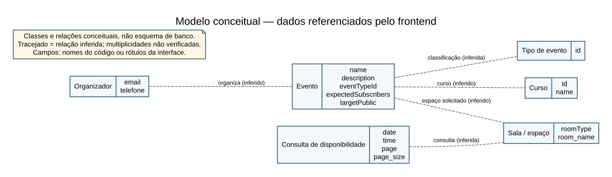

Observação
Elemento encontrado em página pública ou código do frontend consultado. Isso demonstra o que foi visto no cliente, não que uma ação tenha sido executada ou aceita pelo servidor.
Modelagem UML, backlog e especificação funcional e técnica.
O relatório reúne a análise de um fluxo proposto para organização de eventos e solicitação de espaço. O backlog e os critérios de aceite são propostas, não tarefas comprovadamente concluídas. Elaborado por Lucas Dórea Cardoso com apoio de inteligência artificial; revisão do material por Lucas ainda pendente.
Lucas informa ter feito chamadas com Darlas. Não há registros dessas chamadas nesta cópia; por isso, não atribuímos datas, quantidade ou conteúdo, nem as apresentamos como evidência documentada.
O relatório e esta página são materiais preliminares para revisão, não validação do sistema.
Elemento encontrado em página pública ou código do frontend consultado. Isso demonstra o que foi visto no cliente, não que uma ação tenha sido executada ou aceita pelo servidor.
Interpretação necessária para conectar indícios, como uma relação de domínio ou ordem de etapas. Nos diagramas, relações tracejadas e sequências hipotéticas devem ser lidas como inferências.
Comportamento ou requisito desejável para o produto. É decisão de design a validar, não descrição de algo já implementado.
Leia cada diagrama perguntando: qual é a fonte?, o que foi observado diretamente? e o que foi completado por interpretação ou proposto? Não converta nomes de telas, atributos ou rotas em prova de persistência ou funcionamento.
Interações do organizador identificadas no cliente. O diagrama representa possibilidades observadas no código, não comprova execução ou sucesso.

Modelo conceitual derivado de campos e chamadas do frontend. Atributos não comprovam persistência; relações tracejadas são inferências e não fixam cardinalidades.

Síntese inferida do acesso e do fluxo de evento, não uma gravação de navegação nem uma validação operacional. Caminhos de falha e teste são possibilidades modeladas.

Foi consultado o snapshot de labtech-udf/labtech-api, commit d27cd07c705b0ecd1c0aa85689e55892884618d6 (10/06/2024). Ele contém modelos Java distintos do modelo conceitual extraído do frontend atual:
Evento.java define campos como name, description, dateHora e status; a classe liga-se a Arquivo como foto (@ManyToOne) e a ObjDesenSus por uma associação muitos-para-muitos com tabela de junção evento_ods_tb.Arquivo.java define metadados como nome, tipo, URL, tamanho e chave; a relação com evento está declarada no lado Evento.photo.ObjDesenSus.java contém nome, descrição e status para ODS.Os controladores históricos declaram rotas diferentes das chamadas descritas no frontend analisado: por exemplo, /api/public/getAllEvents e /api/public/evento/{id}, além de rotas privadas de evento; o cliente atual declara chamadas como /events, /events/{id}/submit e /reservations. Veja EventoResource.java, ArquivoResource.java e ObjDesenSusResource.java; compare com o cliente HTTP publicado.
Limite importante: este repositório e commit são uma referência histórica de 2024. A diferença entre modelos e rotas não prova que esse código seja, ou não seja, o backend atual. Não estabelece correspondência com produção, versão implantada, contrato vigente ou funcionamento; essa ligação precisa de confirmação independente.
Roteiro sem teste nem demonstração do MVP; a sessão apresenta análise, evidências, propostas e limites.
O relatório é preliminar: faltam evidências documentais dos encontros informados e validação funcional. Os documentos ligados abaixo reúnem as fontes e propostas utilizadas nesta apresentação.
O relatório inclui capturas reais da tela pública de organizador e do staging, que são ambientes distintos. As imagens não comprovam login, persistência ou reserva. Não há registro documental das chamadas com Darlas nesta cópia. Permanecem pendentes revisão por Lucas, validação acadêmica, validação funcional, confirmação de qual implementação corresponde ao ambiente atual e evidências documentais que possam ser acrescentadas sem inferir detalhes.